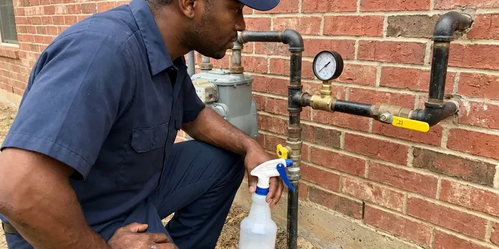

Residential Plumbing Service in Flint, MI
Get complete residential plumbing service in Flint, MI from CHV Plumbing, your local experts for all home plumbing needs.
- Same-Day Home Plumbing Service
- Upfront Flat-Rate Pricing
- Licensed & Insured
- Licensed and Insured Plumbers

Get Expert Home Plumbing Help in Flint, MI.
Our team is ready to deliver quality plumbing solutions right to your doorstep.
Straightforward Residential Plumbing Service From Local Pros in Flint, MI
CHV Plumbing provides full-service residential plumbing service for homeowners throughout Flint, MI. Our skilled technicians are equipped to handle any plumbing issue, keeping your home's systems safe and functional. Older neighborhoods may also have lead service lines, which the state is requiring utilities to replace over time.
Our expertise includes:
- Advanced Leak Detection & Repair
- Fast Drain Cleaning & Unclogging
- Water heater installation and maintenance.

Additional Plumbing Maintenance Services in Flint, MI
Our maintenance and specialty plumbing services in Flint, MI catch small problems before they become emergencies.




Gas Line Repair service for Flint homeowners

Customers
Why Choose CHV Plumbing for Residential Plumbing Service in Flint, MI?
Homeowners choose us because we show up when promised, explain the problem clearly and charge what we quoted. We treat your home with respect.
- Certified Pros, All our plumbers are licensed, insured and regularly trained on the latest plumbing technologies and Michigan codes.
- Prompt Service, We prioritize quick response times for all residential plumbing needs, minimizing disruption to your home and family.
- Respect Your Home, We use shoe covers and drop cloths and clean up before we leave.
Citywide Coverage
CHV Plumbing is proud to serve every neighborhood and community within Flint for all residential plumbing service needs. Whether you are in an older district or a new development, our local teams are ready to respond. We understand the diverse housing stock in Flint and tailor our approach accordingly.
Experienced Team
The CHV Plumbing team brings decades of combined experience to every residential plumbing service job. We pride ourselves on employing knowledgeable, courteous plumbers who treat your home with respect. Their experience covers everything from older cast iron systems to modern PEX installations found throughout Flint.
Safety-First Approach
Safety and code compliance come first in every residential plumbing service job we take on. Our plumbers follow all local Flint and Michigan plumbing codes, so your home's systems are not only functional but also safe and legal. We secure all required permits for major work.
Trusted Certified Flint Plumbing Services Professionals
At CHV Plumbing, we take pride in providing certified plumbing services throughout Flint, MI. Backed by leading industry credentials, our experienced plumbers combine technical skill with genuine customer care. Whether it is repair, installation, or maintenance, we follow strict safety and quality standards to deliver lasting results you can trust.
Call Us Now PHCC Plumbing Contractor Recognition
PHCC Plumbing Contractor Recognition Better Business Bureau (BBB) Accreditation
Better Business Bureau (BBB) Accreditation Angi Certified Pro
Angi Certified Pro ISO 9001 Quality Management Certification
ISO 9001 Quality Management CertificationTrusted Residential Plumbing Service Solutions in Flint, MI
Leak Repair and Slab Leak Service in Flint
Many homes sit on concrete slabs, so a hidden leak under the floor can run for weeks before you see it. Warm spots on tile, a running meter or a spike in your water bill are typical clues. We use acoustic listening equipment, thermal imaging and pressure tests to pinpoint the leak. Then we repair it directly, reroute the line overhead or recommend a repipe when leaks keep returning.

Drain Cleaning and Sewer Service in Flint
Kitchen grease, hair and wipes are the usual causes of slow drains. We clear sinks, tubs and toilets with hand augers and machine cables and use hydro jetting for heavy buildup. For main line backups we run a camera to find roots, offsets or bellied pipe. You get video proof of what is in your line and a clear plan to fix it.
Faucet and Fixture Repair & Installation in Flint
Leaky faucets and outdated fixtures can waste water and detract from your home's appearance. Our residential plumbing service includes expert repair for all types of faucets, showerheads and toilets, fixing drips, low pressure or faulty components. We also offer installation of new, water-efficient fixtures, helping homeowners in Flint upgrade their bathrooms and kitchens with modern, stylish and durable options from brands like Moen, Delta and Kohler.
Drain Cleaning & Clog Removal in Flint, MI
Clogged drains are a common nuisance in Flint homes, often caused by grease, hair and soap scum buildup. We use professional-grade tools like augers, hydro-jetting equipment and drain snakes to clear even the toughest blockages in kitchen sinks, bathroom drains and main sewer lines. Our methods are safe for your pipes and effective at removing obstructions that DIY solutions can't handle. We can also inspect lines with cameras to identify recurring problems, such as tree root intrusion or collapsed pipes, which are sometimes a factor in older Flint properties.
Water Softener & Filtration in Flint
Lake-sourced municipal water in Michigan is moderately hard, so scale gradually builds up in water heaters and fixtures. Hard water leads to mineral buildup in pipes and appliances. CHV Plumbing installs and services high-quality water softeners and whole-home filtration systems from reputable brands like Kinetico and Pelican Water. These systems protect your plumbing, extend the life of appliances and improve the taste and quality of your tap water. We assess your home's water hardness and recommend the most effective solution, ensuring strong performance and efficiency for your needs.
Pressure Regulators and Shutoff Valves in Flint, MI
Water pressure above 80 psi stresses pipes, fixtures and appliance hoses. We test your pressure and install or replace pressure reducing valves set to a safe range. We also replace seized main shutoffs and angle stops so you can turn off water quickly in an emergency. These upgrades protect the rest of your plumbing system.
Residential Plumbing Costs in Flint, MI
Simple repairs like a faucet cartridge or toilet rebuild often run $150 to $350. Water heater replacements usually range from $1,400 to $3,000, and whole-home repipes often cost $5,000 to $15,000 depending on size. We give you a written flat price before starting. Many jobs also come with options so you can choose what fits your budget.

Water Heater Service and Installation in Flint, MI
Whether you have a traditional tank water heater or a tankless unit, our residential plumbing service covers all aspects of water heater maintenance, repair and installation. We address common issues like no hot water, odd noises or leaks, and can recommend energy-efficient replacements suitable for your home. Our team handles everything from gas line connections to proper venting, ensuring safe and efficient operation of your hot water system.
Fast Residential Plumbing Service Near Me in Flint, MI
When you search for 'residential plumbing service near me' in Flint, MI, CHV Plumbing is your local answer. Our team is well positioned to provide fast, efficient service to homes across the entire area. We work hard to be a trusted part of the community, delivering quality plumbing solutions right to your doorstep.
Homeowners across Flint trust CHV Plumbing for all their residential plumbing service needs. Our commitment to fast response times and quality workmanship means you get skilled help right when you need it, often on the same day. For dependable service close to home, just give us a call.
CHV Plumbing at a Glance
- Licensed and insured plumbers serving Flint, MI
- Same-day appointments and 24/7 emergency response
- Upfront, flat-rate pricing before work begins
- 4.9-star rated by 670+ Michigan customers
Flint Map
Flint Information
- Population
- 79,661
- Area codes
- 810/989/517
- Service area
- Flint and communities within 40 miles
- Nearby
- Saginaw, Pontiac, Rochester Hills, South Lyon
Dependable residential plumbing service is important for homes in Flint, MI to handle issues like hard water scaling, foundation movement that stresses pipes and the risks of extreme temperatures.
Expert Services
Trust our professionals for reliable CHV Plumbing solutions in Flint, MI.
Our Specialized Plumbing Services in Flint, MI
At CHV Plumbing, we provide a complete range of plumbing services across Flint, MI. From leak detection to full system installations, our team ensures fast, precise, and affordable service for both residential and commercial properties. Explore our core services below:


How Our Residential Plumbing Service Visit Works in Flint, MI
Getting your home plumbing fixed should be simple, so we keep the process clear from start to finish.
Request a Quote
Call (810) 380-5918 and describe what is happening in your home. We schedule a plumber at a time that works and give you an arrival window.
Diagnose and Price
Your plumber inspects the problem, explains the cause and gives you a written flat price. Nothing starts until you approve it.
Repair and Clean Up
We complete the repair, test the system and clean the work area. You get a warranty and tips to prevent the issue in the future.
Frequently Asked Questions About Residential Plumbing Service in Flint
The cost for residential plumbing service in Flint varies a great deal depending on the specific issue. Minor repairs like a leaky faucet might range from $150 to $300, while more complex jobs like a main line clog or water heater replacement could be $400 to $1,500 or more. We always provide a detailed, upfront quote after diagnosing the problem.
Hard water contains high levels of dissolved minerals, primarily calcium and magnesium. Soft water has these minerals removed. Hard water can cause mineral buildup in pipes, reduced soap lather and appliance damage, while soft water is gentler on plumbing and skin.
Common signs that you need professional drain cleaning include slow drains, gurgling sounds from your pipes, foul odors coming from drains and water backing up in sinks or showers. If you're experiencing any of these issues in your Flint home, it's time to call a professional before the clog gets worse.
Yes, CHV Plumbing stands behind the quality of our residential plumbing service. We offer full warranties on both parts and labor for all our repairs and installations. Full warranty details will be provided with your service agreement, giving you peace of mind.
We work with all major reputable brands for plumbing fixtures and water heaters, including Moen, Kohler, Delta, Rheem, A.O. Smith, Bradford White and Navien. Our technicians are trained to service and install a wide variety of models, ensuring compatibility and quality for your home.
Insulate exposed pipes, especially those in unheated areas like attics or crawl spaces. Disconnect garden hoses, open cabinet doors under sinks to let warm air in and consider letting faucets drip slowly. If you're leaving your Flint home, consider shutting off the main water supply and draining your pipes. Draining outdoor spigots in the fall and keeping heat on in vacant homes stop many of the burst pipes plumbers see each winter.
For plumbing emergencies in Flint, MI, we prioritize rapid response. Our goal is to have a licensed plumber at your home as quickly as possible, often within a few hours, to reduce damage. We understand the urgency of situations like burst pipes or severe overflows and act fast.
Swapping a showerhead or toilet flapper is fine for most homeowners. Gas lines, water heaters and anything behind walls should be done by a licensed plumber for safety and code compliance.
What People Are Saying About Our Plumbing Experts?

Emily R.
I called CHV Plumbing for plumbing repair, and the technician was fast, polite, and thorough. They explained the problem clearly and fixed it the same day. I will definitely hire them again. Highly recommended!
Plumbing Repair · South Lyon, MI
Patricia H.
We had a slab leak that two other companies could not find. CHV Plumbing located it in under an hour, explained our options, and the price matched the quote to the dollar.
Slab Leak Repair · Rochester Hills, MI
Robert G.
The trenchless sewer replacement saved our front yard. They walked us through the camera inspection footage first so we knew exactly what we were paying for.
Sewer Line Replacement · Pontiac, MI
Daniel K.
A pipe burst at 11 pm and they actually answered. The plumber showed up within the hour, shut everything down, and had us back to normal the next morning. Could not ask for more.
Emergency Plumbing · Saginaw, MI
Sofia M.
Two new toilets installed in one visit, no mess left behind, and the tech even adjusted a faucet he noticed was dripping. Fair pricing and really friendly.
Toilet Installation · Saginaw, MIJames P.
Our commercial plumbing system had a leak under the sink, and CHV Plumbing handled it professionally. The plumbers arrived quickly and restored everything without disruption to our customers.
Commercial Plumbing · Bay City, MI